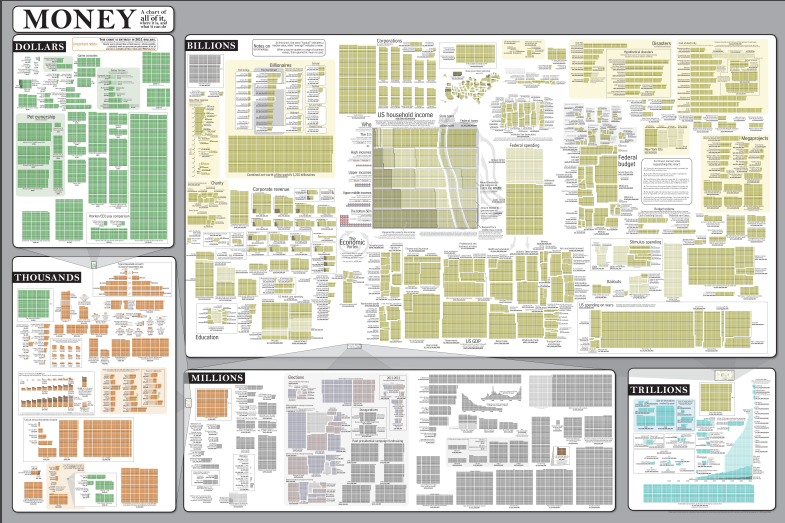
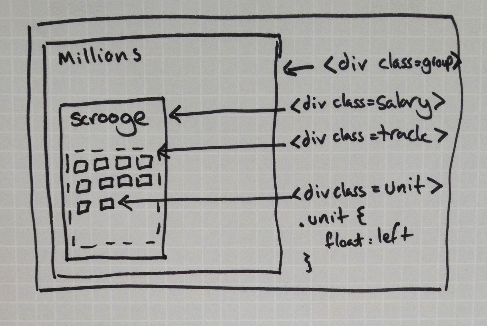
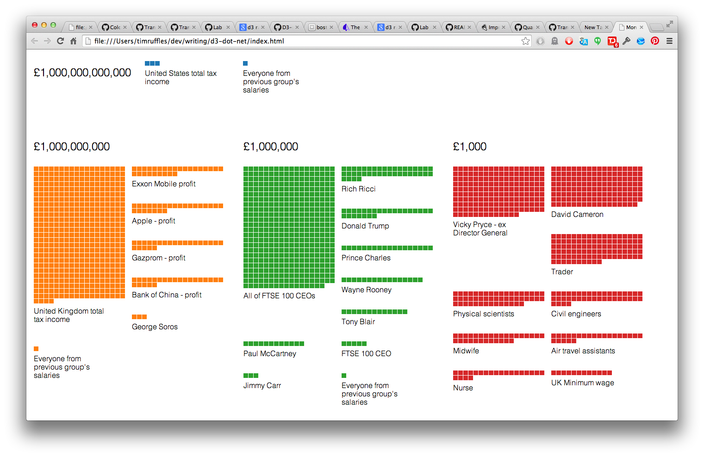
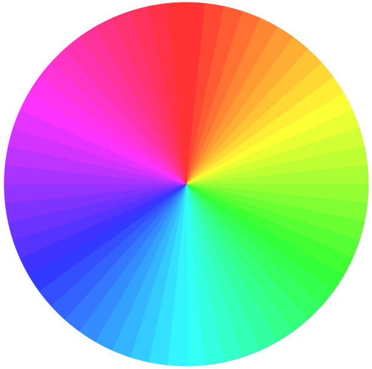

D3's power and idioms are best appreciated through a real-world example, so we'll recreate XKCD's "Money" visualisation. We're going to take data on the income of people, firms and countries, and visualise them in broad groups of magnitude. This allows us to have very different incomes share the same visualisation. Presenting wildly variable data is otherwise challenging: if we visualised the UK minimum wage as a 2x2 pixel block, George Soros's annual income would be 960x960px!

Our task is split between data and presentation. A very common source of ugly D3 code is not getting your data in the right shape. This goes beyond fixing up APIs messy naming or parsing dates: the logical structure of your visualisation should be reflected by your data.
In our case we want to break the incomes down into magnitude groups, and then visualise them as blocks. We'll wrap up this process of data-processing in what D3 calls a 'layout'. Layouts sound visual, but actually are purely concerned with the data side of a given visualisation.
The goal is to an array of data in the format { value: 2500000, title: "Jimmy Carr" } into data in the following format. You can see that this reflects the visualisation: the previous group is included in the next for comparison, and we've calculated the number of unit blocks to display:
var data = [
{
key: "1000000",
total: 2124000000000,
values: [
{ title: "Jimmy Carr",
value: 2500000,
units: 25 }, /* ... more salaries */
{ fromLast: true,
value: 105000,
units: 1 } /* total of previous group */
]
}, /* ... more groups of salaries */
];
Let's implement it! Our layout is a hierarchical. d3.nest() helps here: it takes an array and groups its members by a given key function. To make our layout reusable we'll make this key a configuration function:
function blockLayout() {
var grouper = Math.log;
function layout(data) {
var nested = d3.nest()
.key(function(d) { return grouper(d.value) })
.entries(data)
.map(function(group) {
group.values.forEach(function(v) {
v.units = getUnits(v,group);
});
group.total = group.values.reduce(sumValues,0);
return group;
});
d3.pairs(nested).forEach(function(pair) {
var comparison = {
value: pair[1].total,
group: pair[0],
fromLast: true,
};
comparison.units = getUnits(comparison,pair[0]);
pair[0].values.push(comparison);
});
}
layout.group = function(x) { grouper = x; return this; };
return layout;
}
Returning a function with configuration options is D3's idiomatic style. As JS functions are just objects we attach our configuration method group() to specify how we'll be grouping elements. We'll use the layout as follows:
var layout = blockLayout()
.group(function(value) {
if(value < 1000) return 100;
if(value < 1e6) return 1000;
if(value < 1e9) return 1e6;
if(value < 1e12) return 1e9;
return 1e12;
});
var salaryGroups = layout(listOfSalaries);
This layout is now reusable. If we had another dataset with huge variance, such as sizes from atoms up to galaxy circumferences, we could reuse the layout. It's a pure data implementation of the XKCD visualisation and as such everything to do with a given visualisation is passed in as config.
Now we've got our data in the right format we can start visualising. D3 is a thin wrapper around the DOM so your existing HTML, CSS, JS and SVG skills are all you'll need to figure this out. We have a hierarchy: top level groups of magnitude, then individual incomes, then the units of millions or billions. SVG great when need the kind of bizarre shape that HTML doesn't support, like the exotic 'circle', but this time we don't need such fanciness. I came up with this hierarchy:

Let's get started by appending top level groups:
var groups = d3.select(el).selectAll(".group")
.data(data);
var groupsEntering = groups.enter()
.append("div").attr("class","group")
Next we want to create our salary elements. Our data is nested: we're currently working with datums of the shape { key: "1000", values: [/* salaries */] }. We therefore make a selection of .salary elements and then pass a function to data that extracts the values from each group, as the selection's data.
var salaries = groups.selectAll(".salary")
.data(function(x) { return x.values; });
var salariesEntering = salaries.enter()
.append("div").attr("class","salary");
As you can see, after we've handled the nesting we're back to business as normal. We create tracks, and then use our data() trick again to make many units from each salary.
var units = salariesEntering
.append("div").attr("class","track")
.selectAll(".unit")
.data(createBlocks)
.enter()
.append("div").attr("class","unit")
createBlocks() is simple: if salary needs 10 unit blocks, return an array of length 10:
function createBlocks(salary) {
var blockCount = salary.units;
while(blockCount--) blocks.push(salary);
return blocks;
}
CSS should define all styling that doesn't vary per datum. We want the units to flow naturally inside a constrained track. The rest of the styling is every-day, so I'll leave that as an exercise.
.unit {
float: left;
width: 10px; height: 10px;
background: red; }
.track {
overflow: auto;
width: 200px; }
We could colour each group by hand, but d3.scale is here to help. Scales are D3's tool to relate ranges of values in your data to a range of presentation styles, for instance the age range 18-65 to the colors #a00 to #f00. In this case we want a discrete set of colours:
var color = d3.scale.category10();
// used to style our unit blocks
units.style("background",function(salary) {
return color(salary.group.key);
});
With a few extra styling and markup tweaks we've got a finished visualisation!

BOX
If you have used jQuery, D3 is comfortingly familiar. We work on selections of elements via a chaining API.
d3.select(vizEl).selectAll(".group")
.property("draggable",true)
.style("background","blue")
This code selects all group elements within vizEl, makes them draggable and set their background colour to blue.
But where jQuery's API loves the DOM, D3's loves data. We call .data() on a selection to provide it with a data set. Callbacks passed to selection methods are called for every element with its corresponding datum, and the datum's position in the data set:
d3.select(vizEl).selectAll(".group")
.data([
{ title: "one", value: 10 },
{ title: "two", value: 20 }
])
.style("background","blue")
.style("width",function(data,index) {
return data.value + "px";
})
.text(function(data,index) {
return data.title;
})
Here the width and text content of each element is derived from its corresponding datum.
We'll normally want to keep the number of elements in sync with the number of datums. D3's three contexts - enter(), update, and exit() - allow us to control this process. enter() paired with append() adds elements for datums without one, update handles cases where we have an element datum pair, and exit() affects elements left alone after we've paired the data.
BOX
Dataviz coding will always involve transforming values in our data into attributes for display. D3's scales make this quicker and cleaner.
Scales return a function that transforms values from our data - the domain - into values for our visualisation - the range. The simplest to understand is d3.linear(), which is a line on the XY axis.
Linear scales are useful, but there are many other types. If you have data with a huge range you can use d3.scale.log() to crunch down the variance into something graphable - the same technique used in the richter scale. d3.scale.ordinal() breaks data into categories.
Scales are packed with tools. If you want to draw an axis with 10 evenly spaced marks, call ticks(10) and you'll receive an array of 10 values along your range. To handle input above or below the intended domain, clamp() the scale.
One final powerful feature of scales is interpolation. Frequently we'll be transforming a number into a visual unit, like px or colours. To output pixels, we simply set the range to ["10px","1000px"] and it'll output pixel values ready to use in style() callbacks. It can even handle colour transitions between RGB, HSL or named CSS colours.
As a demonstration, here's a colour wheel using two scales sharing the same domain: a hue scale and an angle scale:

You can see it live at truffles.me.uk/dotnet-d3/colour-wheel, and the code is at truffles.me.uk/dotnet-d3/colour-wheel-code.
END Box 1: quick intro to d3 Box 2: nest Box 3: scales?
Image 1: XKCD original (or sketch version) Image 2: sketch Image 3: styled Image 4: colorful + finished Image 4: another viz with same layout? e.g sizes?
TODOs: host images